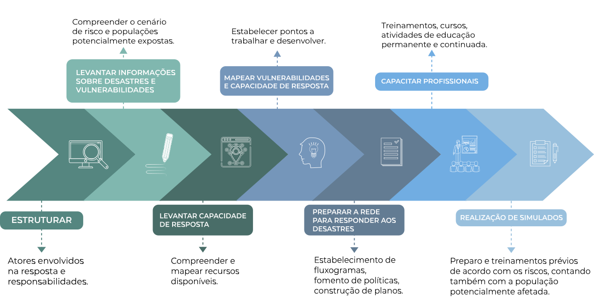

MÓDULO 1 | AULA 4 O papel da APS no cuidado integral à saúde e sua atuação na GRDE em Saúde
A APS como área estruturante do cuidado integral à saúde e sua atuação na GRDE em Saúde
Chegamos à última aula do módulo 1.
Neste momento, analisaremos o papel da Atenção Primária à Saúde (APS) como área estruturante da Rede de Atenção à Saúde diante das emergências e desastres relacionados ao clima, destacando sua centralidade na organização do cuidado e na coordenação das ações no território.
Ao final, você será capaz de compreender o papel estratégico da APS para a garantia da atenção e do cuidado integral em cada território, no contexto da Gestão de Riscos de Desastres e Emergências em Saúde.
A atuação da APS na prevenção, mitigação e resposta às emergências climáticas
Na aula anterior, vimos como a Gestão de Riscos de Desastres e Emergências em Saúde (GRDE em Saúde) pode ser organizada em etapas que demandam o envolvimento de diferentes serviços. Com base nisso, o foco aqui será apresentar as potencialidades da Atenção Primária em Saúde (APS) para a garantia de cuidados frente ao cenário das mudanças climáticas e aos diversos riscos que a população de cada território está exposta.
Como a gestão da APS pode se organizar para a garantia do cuidado integral à saúde em cenários de tantas incertezas?
Ouça o áudio elaborado a partir de falas de profissionais de saúde, que atuam em diferentes territórios e que passaram por diferentes tipologias de eventos, relatando dificuldades.
Áudio profissionais de saúde
[Toca música inicial]
[Toca música final]
Desde a Declaração da Alma Ata de 1978, a APS é reconhecida como essencial para o alcance do objetivo de Saúde para Todos. Essa importância vem sendo reforçada e reconhecida principalmente pelas características singulares dessa atuação. Como porta de entrada para o acesso ao SUS no Brasil, a APS permite o acompanhamento da saúde de nossa população com uma perspectiva única, integrada ao território e nos mais diversos ciclos de vida.
Desse modo, ao fornecer cuidados a longo prazo e centrados na pessoa, a APS engloba diversas funções essenciais na saúde pública, como a promoção da saúde, os cuidados preventivos e o acompanhamento de doenças crônicas.
A APS tem um papel crucial no enfrentamento de iniquidades de saúde e garante o cuidado das populações marginalizadas e vulnerabilizadas.
As equipes da Estratégia de Saúde da Família (ESF), por se inserirem no território, têm uma perspectiva privilegiada para a identificação de necessidades, que permite perceber como os determinantes sociais incidem na vida da população acompanhada.
O SUS deve estar preparado para atuar em todas as etapas da GRDE em Saúde. A APS, como organizadora da rede de atenção à saúde nos territórios afetados, é fundamental em todo o processo.
Entretanto, vale lembrar que a GRDE em Saúde envolve diferentes setores em momentos distintos. Nesse sentido, a atuação da Vigilância em Saúde (VS) também é primordial na estruturação de fluxos de dados e informações que possibilitem avaliações rápidas dos riscos na esfera local e, em alguns casos, em tempo oportuno. Desse modo, a APS e a VS, em todos os seus componentes, precisam trabalhar de forma integrada para identificar riscos à saúde.
A partir do cenário de risco de cada território, é importante que a APS se organize para atuar de acordo com as ameaças e com os recursos disponíveis para a garantia de sistemas mais resilientes e preparados.
Além disso, por estar no território e em articulação com toda a Rede de Atenção em Saúde (RAS), a APS deve se organizar de forma a saber reconhecer potencialidades e desafios que precisam ser transpostos, com base nos riscos que cada território apresenta. Conheça a seguir os pontos estratégicos da APS na GRDE em Saúde.
Clique em cada tópico e entenda a explicação
Preparação para a garantia de cuidados de acordo com cada risco associado, e para que seja possível pensar em planos de contingência junto aos demais tomadores de decisão da Rede de Atenção em Saúde.
Estabelecimento de estratégias para acompanhamento de grupos, tendo como referência o cenário e as linhas de cuidado previstas em programas de atenção à saúde.
A APS tem papel articulador junto à RAS, dialogando com os serviços de Urgências e Emergências, Atenção Secundária e Terciária, Rede de Atenção Psicossocial, Centro de Referência de Assistência Social, Vigilância em Saúde, Departamento de Administração e Planejamento em Saúde.
Os agentes comunitários de saúde (ACS) e os agentes de combate à endemia (ACE), além das equipes da Estratégia de Saúde da Família, têm um papel importante no diálogo com a população de cada território para identificação de necessidades e riscos do território. Além disso, são cruciais para pensar em estratégias como, por exemplo, planos de evacuação, rotas de fuga, o que fazer em caso de acionamento de sirenes e treinamento de preparação para desastres junto às comunidades.
Por estar em cuidado contínuo no território, a APS tem papel estratégico porque é responsável pelos dados da população adscrita, de acordo com a situação de saúde e os determinantes sociais. Por essa razão, pode identificar grupos mais vulneráveis como pessoas em situação de rua, gestantes, idosos, pessoas com doenças crônicas descompensadas, obesos, pessoas com deficiência. São dados que permitem o planejamento de ações de acordo com a especificidade de cada grupo e com as ameaças presentes em cada território. Além disso, permitem também a garantia de cuidados em situações nas quais os serviços precisam adaptar suas rotinas pela ocorrência de eventos extremos.
Ao identificar os riscos aos quais cada população está exposta, a APS tem o dever de garantir atividades de educação em saúde que facilitem a adoção de medidas de proteção e autocuidado. Além disso, é importante orientar quanto aos sinais de alerta e às ações de cuidado para melhorar a resiliência diante de eventos extremos.
Como coordenadora do cuidado em saúde, ao garantir a vigilância dos agravos, a APS tem papel fundamental na identificação de rumores, no encaminhamento para atenção secundária e terciária e na articulação com atores da gestão para a continuidade da prestação de serviços.
A APS tem papel fundamental no planejamento de ações estratégicas para a garantia do cuidado. Como porta de entrada, a APS permite que serviços de Urgências e Emergências foquem na assistência de usuários em estado crítico, diminuindo a superlotação e direcionando demandas de acordo com a sua complexidade.
Manter equipes de saúde preparadas para atuar em todas as fases da GRDE em Saúde requer planejamento, ajustes na rotina de trabalho, formação, capacitação e treinamento de todo pessoal envolvido. Importante também é a realização de exercícios simulados para profissionais de diferentes níveis de formação e voluntários.
A preparação das equipes da APS deve prever também qualificações específicas que contribuam para manter a saúde dos seus trabalhadores. Portanto, é essencial garantir espaços de formação permanente para que os profissionais tenham a capacidade de identificar como atuar e contribuir em cenários de riscos e incertezas.
A preparação e a resposta aos desastres exigem planejamento estruturado, definição de responsabilidades e fortalecimento contínuo das capacidades institucionais. Nesse contexto, é fundamental compreender riscos, mapear vulnerabilidades, qualificar profissionais e organizar a rede de serviços para atuar de forma coordenada e eficaz.
Observe na imagem a seguir os principais pontos estratégicos que orientam esse processo.
Clique nos itens e saiba mais.

Nesta aula discutimos o papel estratégico da Atenção Primária à Saúde (APS) como eixo estruturante do SUS e elemento fundamental para a garantia do cuidado integral, especialmente no contexto da Gestão de Riscos de Desastres e Emergências em Saúde (GRDE em Saúde). Além disso, a APS, por sua inserção territorial e vínculo com a população, possui posição privilegiada para identificar vulnerabilidades, enfrentar iniquidades e organizar a rede de atenção nos diferentes ciclos de vida.
Vale reforçar também a importância da atuação integrada entre APS e Vigilância em Saúde na identificação e monitoramento de riscos, bem como a necessidade de planejamento e organização das equipes conforme o cenário de cada território, fortalecendo a resiliência do sistema de saúde diante de desastres e emergências relacionadas ao clima.
Nesse sentido, os próximos módulos de curso apresentarão as atribuições da APS frente à realidade imposta pelas mudanças climáticas e ao potencial aumento de desastres e outras emergências em saúde pública.